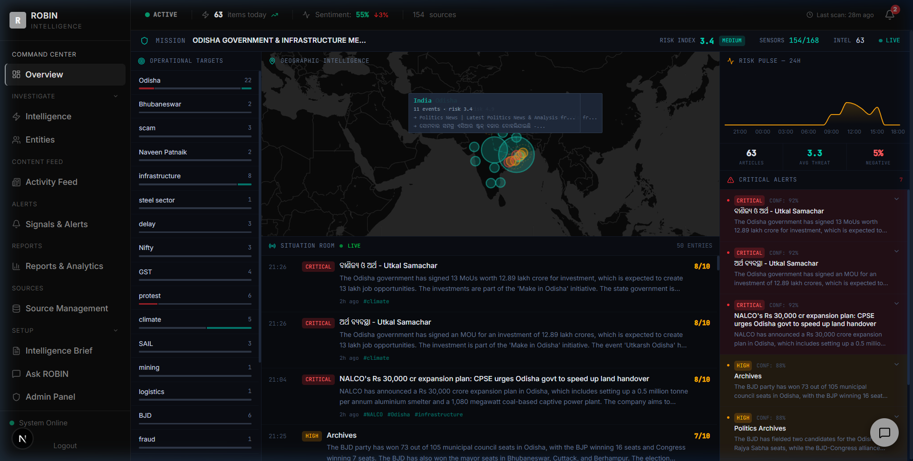
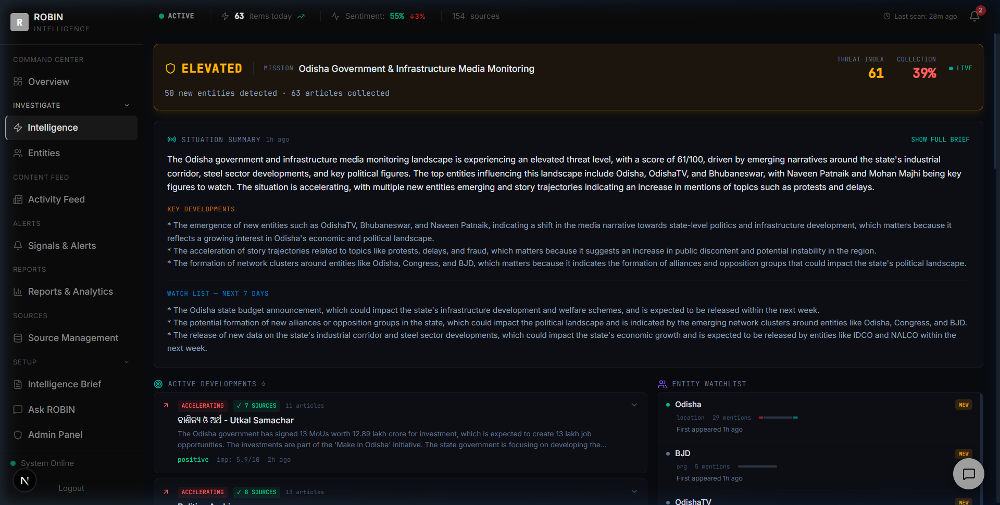
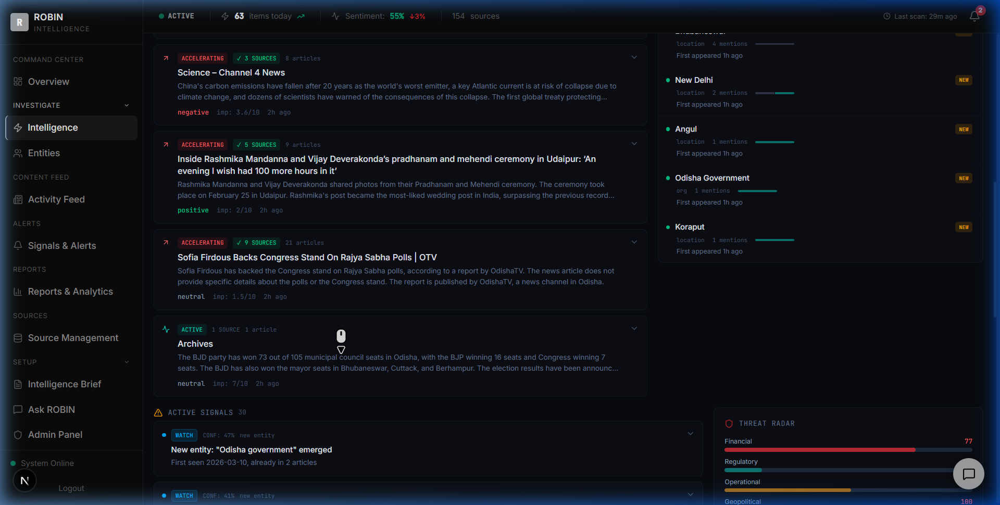
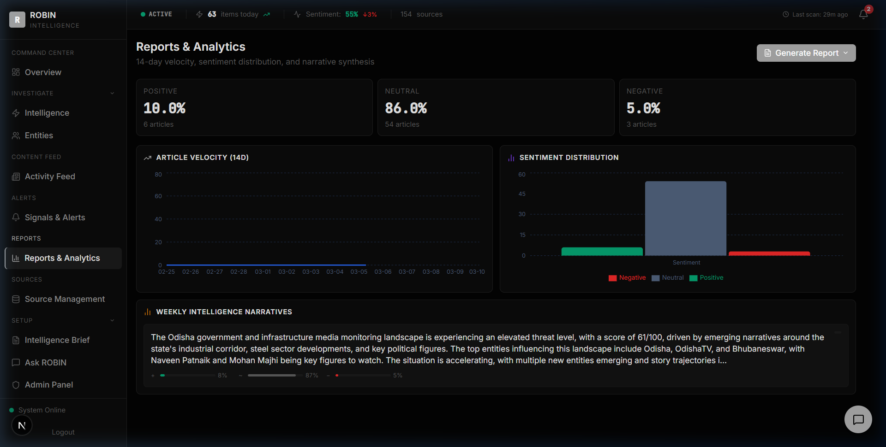
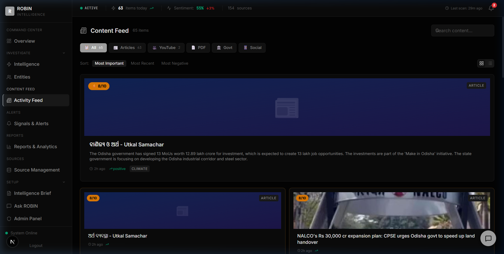
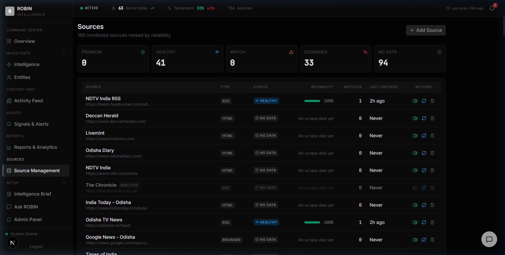
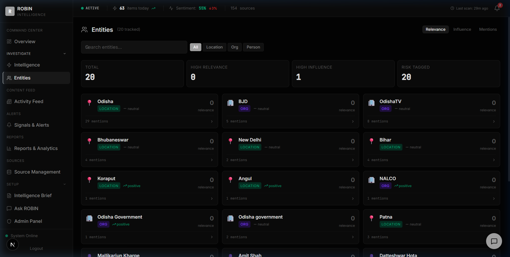

Open Source Intelligence & Media Monitoring System
Platform Capability ReportROBIN is an AI-powered Open Source Intelligence (OSINT) platform purpose-built for the Government of Odisha. It continuously monitors 154 news sources — including national and regional media outlets, government portals, financial news services, and Odia-language publications — to provide real-time awareness of media narratives, sentiment trends, and emerging issues related to Odisha's governance and infrastructure programs.
Continuously scans 154 sources including English and Odia-language news, government portals, and social media for relevant content about Odisha.
Every article is analyzed by artificial intelligence to determine sentiment (positive/negative/neutral), importance score (1-10), and key claims made.
High-importance developments are automatically flagged as critical alerts, ensuring your team never misses significant news about Odisha.
AI synthesizes all collected articles into executive-level intelligence briefs with key developments, emerging threats, and watch-list items.
The Command Center is your primary situational awareness screen — a single view that shows the entire intelligence landscape for the Government of Odisha at a glance.

Shows the keywords being monitored (e.g., "Odisha" — 22 hits, "infrastructure" — 8 hits, "BJD" — 6 hits). Each keyword shows a sentiment indicator bar — how positively or negatively the media is covering that topic. Click any keyword to filter the entire dashboard.
Interactive map showing where news activity is concentrated. Larger circles indicate more media coverage in that region. The map shows coverage across India with activity nodes in Odisha, Bhubaneswar, Delhi, and other relevant locations. Hover over any node to see linked articles.
A live feed of the 50 most important articles, sorted by importance score. Each entry shows the time, severity level (CRITICAL / HIGH / ELEVATED / ROUTINE), source name, AI-generated summary, importance score out of 10, and matched keywords. Supports both English and Odia-language (ଓଡ଼ିଆ) articles.
Automatically generated alerts for articles that score ≥7/10 in importance or carry negative sentiment. Each alert has a confidence score and can be expanded to see key claims, named entities (people, organizations, locations), and a direct link to the source article.
Calculated from the average importance score of all articles, weighted by the proportion of negative sentiment coverage. Range: 0 (no risk) to 10 (critical).
Shows how many of your configured news sources are actively being monitored. 154 sources are currently providing data out of 168 configured total.
The Intelligence Brief page provides a comprehensive, AI-generated analysis of the entire media landscape. It synthesizes all collected articles into an actionable intelligence report — the kind of document that would normally require a team of analysts working for hours.

Overall assessment: Threat Index 61/100. This is calculated across 7 analysis dimensions including political stability, economic indicators, infrastructure developments, and media narrative tone. The "ELEVATED" status indicates increased media activity around sensitive topics.
AI-written executive summary of the current landscape: "The Odisha government and infrastructure media monitoring landscape is experiencing an elevated threat level, driven by emerging narratives around the state's industrial corridor, steel sector developments, and key political figures."
AI identifies the most significant developments: (1) emergence of new entities like OdishaTV and Naveen Patnaik in coverage, (2) acceleration of story trajectories for protests and delays, (3) formation of network clusters around Odisha, Congress, and BJD party coverage.
AI-predicted items to watch: (1) Odisha state budget announcement, (2) potential formation of new political alliances, (3) release of new data on the industrial corridor and steel sector developments.

Groups of related articles clustered by topic. Each development shows: trend direction (Accelerating/Stable/Fading), number of corroborating sources, article count, and a combined importance score. Example: Odisha MoU signing — 7 sources, 11 articles, trend accelerating.
Tracks key people, organizations, and locations appearing in the news. Shows each entity's type, mention count, and whether they are newly emerging. Currently tracking: Odisha (29 mentions), BJD (5 mentions), OdishaTV (new), and more.
The Reports & Analytics page provides quantitative insights into media coverage over time, including sentiment breakdowns, article velocity trends, and AI-generated weekly narrative summaries that can be exported as PDF reports.

Every article is classified by AI as Positive, Neutral, or Negative. Current breakdown: 10% Positive (6 articles), 86% Neutral (54 articles), 5% Negative (3 articles). This helps gauge overall media tone toward Odisha's policies and initiatives.
Shows the volume of articles collected per day over the last 14 days. Spikes indicate increased media attention — useful for identifying when a story is gaining traction. The chart covers Feb 25 to Mar 10.
Visual comparison of negative, neutral, and positive article counts. Makes it easy to see at a glance whether media coverage is trending positively or negatively, and how the balance shifts over time.
AI-written summary: "The Odisha government and infrastructure media monitoring landscape is experiencing an elevated threat level, with a score of 61/100, driven by emerging narratives around the state's industrial corridor, steel sector developments..."
The Activity Feed shows every piece of content collected by the system in chronological order — articles, video transcripts, government releases, and social media posts — each enriched with AI-generated analysis.

Each article shows: headline, source name, publication time, full AI summary, sentiment badge (colored green/gray/red), importance score, and matched monitoring keywords. Click any article to read the full content or visit the original source.
Filter by content type: Articles, YouTube Videos, PDFs, Government Releases, or Social Media posts. Each type has a dedicated icon for easy visual identification.
Each article displays which of your monitoring keywords it matched (e.g., #Odisha, #infrastructure, #climate). This shows exactly why each article was collected and how it relates to your intelligence brief.
The system processes articles in both English and Odia (ଓଡ଼ିଆ). Odia-language articles from sources like Utkal Samachar, Dharitri, and Pragativadi are fully analyzed with AI-generated English summaries.
The Source Management page provides full visibility into the network of news sources being monitored. It shows the health status, type, and last successful scan time for every configured source.

RSS Feeds — automated news feeds from major outlets. HTML Crawlers — scan web pages for content. YouTube — monitor video channels. Google News — aggregated search results. Reddit — social media monitoring. Government Portals — official releases.
Each source shows its active/inactive status, last successful scan time, success count, and failure count. Sources that fail repeatedly are automatically flagged, ensuring data quality remains high.
Sources are scanned automatically every 2 hours. Each scan checks for new content, downloads articles, and queues them for AI analysis. The system handles rate limiting and retry logic automatically.
New sources can be added at any time — simply provide the URL and type. The AI identifies the best crawling strategy for new sources automatically. Custom keywords focus collection on relevant content.
The Entity Intelligence page tracks every person, organization, and location mentioned across all collected articles. It builds a dynamic profile of each entity showing their media visibility, influence, and relationships.

Visual network showing how entities are connected. Larger nodes indicate more mentions. Lines between nodes show co-occurrence in articles. Helps identify alliances, conflicts, and influence networks in Odisha's political and business landscape.
Each entity has a detailed profile: name, type (person/organization/location), total mentions, influence score (0-100), sentiment trend, and related articles. Entities are ranked by their influence on the overall narrative.
Shows whether each entity's media presence is rising, stable, or declining. New entities are flagged with a "NEW" badge. Currently tracking 50 entities across Odisha's governance, industry, and political ecosystem.
The system automatically identifies when the same entity appears in different contexts — for example, when a political figure is mentioned in both infrastructure and protest-related coverage — revealing hidden connections.
ROBIN operates as a fully automated intelligence pipeline. Here's how data flows from raw news articles to actionable insights on your dashboard — no manual intervention required.
Scan 154 sources every 2 hours
Match against 42 Odisha-specific keywords
AI scores sentiment & importance
Generate intelligence narratives
Dashboard & alerts in real-time
Each article is rated by AI for its significance to Odisha governance. Factors considered: policy impact, public welfare implications, scale of economic activity, prominence of entities involved, and urgency of the development. Score ≥ 8 triggers a Critical Alert.
AI reads the full article content and classifies its tone as Positive (favorable coverage), Neutral (factual reporting), or Negative (critical or adverse coverage). This is based on language analysis, not just keyword matching.
Composite score calculated as: Average Importance × (1 + Negative Sentiment Ratio). A risk index above 7 is "Critical", 5-7 is "Elevated", 3-5 is "Medium", below 3 is "Low". Currently at 3.4 (Medium) for Odisha.
A more comprehensive score used in the Intelligence Brief. Considers 7 dimensions: entity emergence velocity, story acceleration, network formation, cross-source corroboration, sentiment shift, media volume, and narrative divergence.
Shown on each critical alert. Calculated as: 60% base + (importance × 4). Higher importance articles naturally have higher confidence. Scores range from 64% (importance 1) to 95% (importance 8+).
When the same story appears across multiple independent sources, it is marked as "corroborated". This is a strong signal that the development is genuine and significant, not a one-off or unverified report.
ROBIN monitors a curated network of 154 sources specifically selected for relevance to Odisha's governance, infrastructure, and political landscape. Sources span national, regional, and Odia-language media.
NDTV, Times of India, The Hindu, Hindustan Times, India Today, The Indian Express, Economic Times, Business Standard, LiveMint, and more.
OdishaTV, Utkal Samachar (ଉତ୍କଳ ସମାଚାର), Pragativadi, Dharitri (ଧରିତ୍ରୀ), Odisha Bhaskar, Sambad, Kalinga TV, and Odisha Sun Times.
Government of Odisha official portals, Press Information Bureau (PIB), IDCO, NALCO, Odisha Mining Corporation, and state department announcements.
YouTube channels of OdishaTV, NDTV, Times Now. Reddit communities for Odisha discussion. Google News aggregated searches for trending Odisha topics.
The system monitors for the following keywords across all sources. Articles matching any keyword are collected and analyzed:
Political: Mohan Majhi · Naveen Patnaik · Odisha BJP · BJD Odisha · Congress Odisha · Dharmendra
Pradhan
Industry: Tata Steel Odisha · JSPL Odisha · SAIL Rourkela · NALCO · Odisha industrial corridor ·
IDCO
Infrastructure: Odisha infrastructure · Smart City Bhubaneswar · Paradip port · Dhamra port
Governance: Odisha government · Odisha cabinet · Odisha budget · Odisha assembly
Social: Odisha protest · Odisha flood · Odisha cyclone · Odisha tribal · Odisha poverty
Economic: Odisha GDP · Odisha investment · GST Odisha · Nifty · Mining Odisha
Powering informed governance through AI-driven media intelligence
For questions or support
admin@odisha.gov.in
© 2026 ROBIN Intelligence. All rights reserved.
This document is confidential and intended solely for the Government of Odisha.